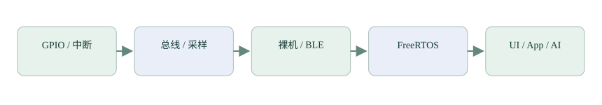

让电路、代码与界面
成为同一个故事。
面向已有 C 语言基础、刚开始学习嵌入式的读者。先理解知识，再做独立实验，最后回到 SmartWatch：从 GPIO、通信与裸机调度，一步步进入 FreeRTOS、UI、App、AI 和无线更新设计。

先准备什么
- 已经理解 C 的函数、数组、指针、结构体和位运算；不重复教授 C 语法。
- 需要动手时，准备已确认能工作的独立 STM32 实验环境、合适电平的串口连接和基本测量工具。具体 LED、按钮、TIM/DAC 引脚按实际板卡原理图选择。
- 当前手表供电正常，既往烧录异常仍待定位。教程不自动执行 Generate Code、擦写或设备升级。
- 参考 LVGL 8.3 与现有 STM32U5 HAL1 / stai 接口；App 按锁定依赖版本阅读。
第一章：裸机开发
先完成 GPIO、串口、中断、SPI、IIC 和 ADC，再依次学习无线通信下的基础、手写协议与项目实现，接着用 DMA 篇补齐数据搬运知识。到这里，手表项目裸机阶段所需的知识已经齐备；时钟、TIM 和看门狗等放在嵌入式拓展中，最后以裸机逻辑综合收束，再进入 FreeRTOS。
起点：让电路、代码与工具对上号
默认已掌握 C。先建立电平、引脚、外设、驱动与应用的对应关系，学会在实验之前确认条件。
第一章 · 01GPIO：从点亮一盏灯到读懂按钮
从 LED 与按钮开始，理解输入、输出、复用、模拟，以及推挽、开漏和上下拉。
第一章 · 02UART：从高低电平到一次完整收发
从异步位时序到阻塞收发，弄清波特率、数据编码和接线，再为中断收发做准备。
第一章 · 03中断：从一次按钮事件到优先级与向量表
理解 EXTI、NVIC 和中断入口，并把串口接收从阻塞等待迁移到事件驱动。
第一章 · 04SPI：先读时序，再驱动一块屏幕
从异步风险引出时钟、主从与片选，逐位观察收发，再用 HAL 完成轮询、中断和 DMA 实验。
第一章 · 05I²C：从共用线路到传感器驱动
从共用线路、地址与寄存器访问讲起，使用硬件 IIC 驱动传感器；GPIO 模拟时序放在可选扩展。
第一章 · 06ADC：从电压到数字，再实现项目麦克风
先理解采样、量化和内部转换，再测电池电压；展开子篇，完成麦克风连续采集、缓冲和声音强弱判断。
第一章 · 08DMA：数据怎样自动搬进数组？
解释请求、地址、宽度和循环缓冲，到这里项目裸机阶段需要的外设与通信知识已经齐备。
嵌入式拓展 · 01时钟：这些“每秒多少次”从哪里来？
从时钟源、倍频与分频走到处理器、总线与外设。
嵌入式拓展 · 02定时器：让硬件计数、定时和输出脉冲
从按拍计数理解定时、脉宽输出和输入捕获，解释 TIM6 与 HAL 延时。
嵌入式拓展 · 03系统运行：看门狗、实时时钟、保存与低功耗
理解看门狗恢复、日历计时、断电保存与低功耗。
第一章 · 09 / 裸机收束裸机逻辑综合：把手表各部分接起来
把按键、采集、显示和通信放进主循环，以具体数据交接结束裸机部分。
第二章：FreeRTOS
从普通函数、函数指针和多任务的区别开始，再依次建立任务、等待、通知、数据交接与内存管理，最后接回手表实际运行的三个任务。前置一篇，正文八篇。
从函数调用到多任务：先补上这几步
已经会写函数、指针和主循环，还需要认识“把函数交给别人调用”和“几个执行流程交替推进”。这一篇先用普通 C 程序看清它们，再进入 FreeRTOS。
第二章 · 1第一个 FreeRTOS 程序：让两个任务分别前进
已经知道任务入口是一个函数。这次创建两个任务，用两个计数变量观察它们各自执行，再解释创建、等待和启动之间的关系。
第二章 · 2任务什么时候运行：从等待读懂调度
两个任务都在循环，为什么还能轮流前进？先看等待怎样交出执行机会，再看优先级怎样决定下一步，最后把系统节拍和周期工作接起来。
第二章 · 3传感器数据到了：从标志位走向信号量
沿用 LSM6DSOX 水印中断。先看任务怎样停止反复查询，再让中断唤醒它，最后解释当前项目为什么还设置了等待超时。
第二章 · 4任务之间传数据：先把一个整数交清楚
信号量告诉任务“有事要处理”。如果还要把一份数值交给另一个任务，并保留先后顺序，就需要明确数据存在哪里、谁负责保存。
第二章 · 5两个任务碰到同一个资源：先看怎样交错
任务有自己的栈，但总线、界面和文件级变量仍然可能共享。先沿着一次具体的交错找问题，再决定由谁使用资源，或怎样保护完整操作。
第二章 · 6一帧声音，两项用途：先通知，再交付
麦克风的一帧采样同时用于声音检测和关键词识别。沿着“采集完成、通知任务、读取私有帧、归还空间”理解当前实现，再比较通知指定任务的另一种方式。
第二章 · 7任务为什么创建失败，运行一会儿又为什么崩溃？
从创建接口里暂时略过的栈深度继续：分清任务栈、内核分配池和静态数组，用项目的大数组实例理解容量，再建立有证据的排查顺序。
第二章 · 8接回手表：三个任务怎样组成一个系统
把前面分开学习的创建、等待、通知和存储放回实际项目。沿启动顺序和数据流读当前代码，明确每项任务负责什么，再说明哪些地方需要通过运行观察验证。
五条支线：把系统变成可继续开发的产品
显示驱动与 LVGL
从屏幕驱动、移植到控件、交互与性能。
支线二 / CH582M 开发与蓝牙桥接 · 8 篇支线二：从 STM32 走向 CH582M 蓝牙开发
延续 C、GPIO、串口和中断知识，比较开发工具与接口，再沿事件循环、服务回调和队列，走通手机到 STM32 的双向链路。
支线三 / Dart 与 Flutter App · 10 篇支线三：从 Dart 到手表配套 App
先配置环境，专篇学习 Dart 语法，再用同一个电量小程序逐步理解页面、状态、异步、协议和蓝牙。最后接回项目，并拓展 Android 告警。
支线四 / 数据、训练与部署 · 12 篇支线四：从传感器数据到 STM32 模型部署
以活动识别贯穿数据、训练、评估、量化和部署。Python 语法单独补齐，再接入可运行的小模型实验，关键词和睡眠各自展开。
五 A / 原型学习与个性化 · 7 篇支线五 A：让手表适应佩戴者
从二维类别中心手算起，理解方向相似度，再对照 128 维特征、会话筛选、独立评估和可靠备份。
五 B / 无线固件升级 · 6 篇支线五 B：从程序启动到可靠无线升级
先补启动、镜像与 Flash，再通过普通文件模型实际观察暂存、试运行和回退。最后设计手机到主控的链路与验证顺序。
进度与能力边界
| 内容 | 这份教程提供什么 | 还需要什么 |
|---|---|---|
| 基础与裸机 | 概念、示例代码、时序图、实验与排错 | 按实际硬件完成接线和测量 |
| FreeRTOS | 调度、协作与当前任务的对应 | 高负载时序、栈水位和异常恢复实测 |
| UI / App | 当前版本接口与模拟数据练习 | 设备联调、权限与真实显示验证 |
| AI / proto | 数据契约、后训练约定与评估流程 | 真机采集、参数标定与独立测试集 |
| OTA | 知识、状态机与主机模拟练习 | Bootloader、真实分区与掉电恢复实现 |
教程以知识和项目实践为中心。AI 参数需要真机数据；后续后训练约定走 proto。完整固件 OTA 尚未实现，不能把现有原型恢复当作已经具备 OTA。
资料来源
参考 ST、Arm、NXP、FreeRTOS、Bluetooth SIG、LVGL、Flutter、ST.AI 官方资料，以及野火官方教程和原型网络论文。各章末提供对应链接；图示与实验按本课程重新组织，没有整篇转载。